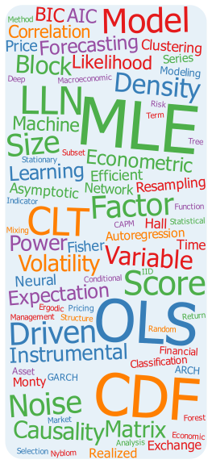

| Econ 470 | Introduction to Econometrics | |
| Econ 573 | Machine Learning | |
| Econ 575 | Time Series and Forecasting | |
| Econ 770 | Introduction to Econometrics | PhD (first year) |
| Econ 873 | Time Series Analysis | PhD |
| Econ 970 | Econometrics | PhD seminar |
| SE1 | Statistics and Econometrics | PhD (first year) |
| SE3 | Time Series Analysis | PhD (first year) |
| Topics | Advanced Econometrics | PhD (second year) |
| Econ 102B | Introduction to Econometrics | |
| Econ 105 | Economic Forecasting | |
| Econ 270 | Intermediate Econometrics I | PhD (first year) |
| Econ 271 | Intermediate Econometrics II | PhD (first year) |
| Econ 275 | Time Series Econometrics | PhD (second year) |
| Econ 300 | 3rd Year Research Seminar | PhD (third year) |
| MGTE 603 | Stanford GSB | PhD (first year) |
| Econ 162 | Introduction to Econometrics | |
| Econ 163 | Econometrics II | Advanced undergrads |
| Econ 266 | Time-Series | PhD (second year) |
